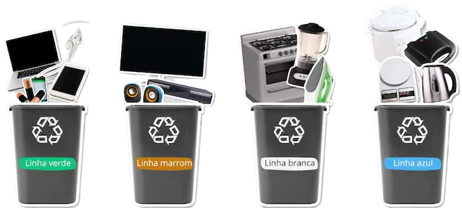

Qual a diferença entre rejeito e resíduo eletrônico?
Os rejeitos eletrônicos são todos os dispositivos eletroeletrônicos, como celulares, tablets, computadores, TVs, lavadoras de louça e de roupa, geladeiras e etc, que não podem ser reutilizados e nem reciclados devido a seu estado de desgaste ou quebra. Mas se estiverem em boas condições ainda, devem ser reutilizados, assim, se enquadrando em resíduo eletrônico e não apenas rejeito. A maioria desses dispositivos são jogados em um lixo comum, que é de forma irregular.
Esses rejeitos são classificados em 4 linhas de produtos, são elas:
- Linha verde: computadores, notebooks, tablets, celulares.
- Linha marrom: monitores, televisores, equipamentos de áudio, filmadoras;
- Linha branca: refrigeradores, fogões, secadoras, lavadoras;
- Linha azul: batedeiras, liquidificadores, furadeiras, cafeteiras;
Já os resíduos eletrônicos, são os mesmos tipos de dispositivos, porém, apesar de já terem cumprido suas funções de uso, ainda é possível uma reintegração em novos ciclos de produção por meio de formas de reaproveitamento, que transformam esse produto para outros afins.
Os resíduos eletrônicos representam 5% de todo o lixo produzido pela humanidade. Segundo dados da ONU (2015), são 50 milhões de toneladas jogadas fora anualmente e entre 60 e 90% destes resíduos são jogados no lixo comum ou são comercializados ilegalmente.
Podem conter substâncias químicas perigosas à saúde e ao meio ambiente, como chumbo, cádmio, mercúrio, berílio. Por essa razão, o descarte incorreto provoca a contaminação do solo e da água.